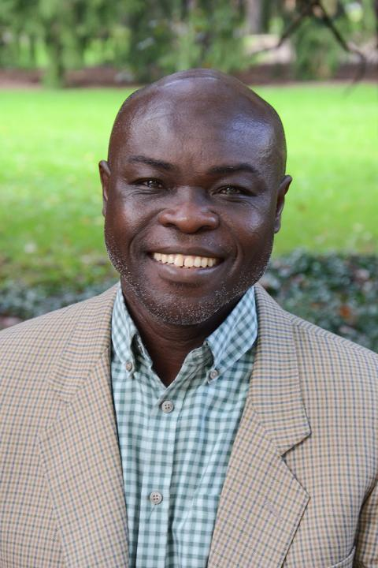
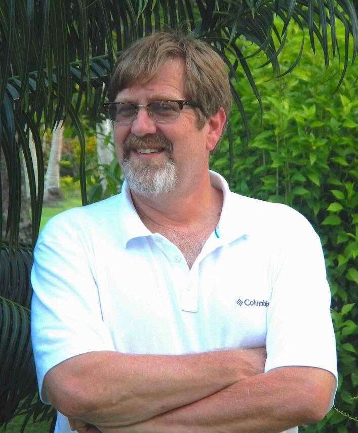

About Destination Unknown
About the project
"When I graduate, I’m going to be a _____. Why should I care about General Education?"
Destination Unknown is a project that uses dialogue to explore the impact of a General Education on the complicated, winding careers of real people.
As they take on leadership roles, start their own companies, brave intimidating changes in their career paths (including the prospect of joblessness), or simply make great leaps in the name of their own happiness, they all face the task of translating 120+ credits of a college education into a profession--if not a series of professions--outside anything their dreaming, first-year student-selves would have ever foreseen.
Through conversation, our interlocutors share with us the challenges they have endured, the successes they have celebrated, and the failures they have suffered. They talk about the collage of knowledge they are still curating, and how it helps them with the difficult look in the mirror every time another reinvention is impending, whether by necessity or by choice.
So how does an engineering course help an editor see connections in her writers’ subjects? Technical theater open up a whole new professional path for a doubtful engineer? A psychology course transform an aspiring medical doctor into a counselor with a thriving career (while disappointing his parents)?
How can dance help leaders be aware of the non-verbal cues they give to others? History instill us with the tendency to doubt and the capacity to restore? Math reveal itself in problems and solutions all at the same time? And studying another language build the home you never knew you needed?
Destination Unknown does not seek definitive answers to these questions; neither does it offer career advice or distill the evolving labor market into desirable skillsets. It rather employs dialogue and storytelling to spark conversations about the functions of a General Education across the experiences of a lifetime.
Our speakers are professionals from a wide array of disciplines and inter-disciplines, on straight career paths and newly patterning career mosaics. How do college graduates, 5, 10, 15+ years out, view their General Education courses? What has proven important? What has come as a surprise? And are there any regrets?
We find our interlocutors’ thoughts to be as deeply insightful as they are wondrously unpredictable. Our hope is, you do, too.
About us
Jutta Gsoels-Lorensen | Kelly Munly | Kofi Adu | Andrew Mack | Christopher MartinAssociate Professor of German, English, and Comparative Literature
Penn State Altoona
email: jmg35@psu.edu
As someone who teaches in the General Education curriculum almost every semester, I think about the place these courses hold in a student’s academic career quite a bit.
Institutional “learning outcomes” provide some guidance, but they cannot convey why a word in another language, studied in college, feels right for a tattoo years later, or in what ways asking the best questions in the room can be career-defining (and foundational in life, too).
Listening to the inaugural Destination Unknown panelists reflect on General Education, and education generally, was revelatory in this regard. Unmoored from the strictures of “the bio,” our speakers drifted with the twists and turns of their life stories, describing lessons hard-earned on the ground but also how to keep a lively practice of the impossible. They talked about following a single pencil line into a profession, defending an inclination against laughter, and thinking about professional life in images decidedly not “the path.”
No employer survey could have rivaled their fantastical clarity. Their stories have already changed how I talk about GenEd in my classes. We need many more of them.
Assistant Professor of Human Development and Family Studies
Penn State Altoona
email: kam6832@psu.edu
When I went to college, I applied for General Education exemption, thinking that I knew my path. However, the GenEd courses I took as preparation for a possible grad school direction ended up helping to make connections between other courses (e.g., an Intro to Art History course that provided visual companions in time to my study of English and French literature) or were pivotal courses (e.g., American History) to enlighten me on the power of using story with critical thinking to understand human experience.
Today, I combine the use of story and critical thinking to support my students to understand lifespan experience. Subsequently, my professional life has not been entirely linear, with an exploration of human services and research contexts, but I feel that this diversity of experience, as with GenEd coursework, contributes to my ability to provide nuanced substance in the classroom and a broader research lens.
I am a U.S. citizen born in Ghana, where I received much of my education, from my first mornings in elementary school to the hot afternoon when I was handed my undergraduate diploma. Ghana’s education system has changed since then, but when I was a student, we all followed a broad-based curriculum initially, then choosing an area of interest from three tracks in science, business and arts and humanities. I opted for the first one. From then on, I studied an ever more focused set of classes in math and natural sciences with ever fewer courses in other fields. Finally, at university, I was only required to take two General Education courses as a physics major.
I wish my program had provided the options of the General Education experience, which allows students to explore and develop their latent inclinations. I think it helps them with identifying the appropriate major and strengthens their overall skills.
My career has been to follow my passions for tropical rainforests and birds. My undergraduate studies spanned ten years at four universities in four states. I worked my way through school with jobs in a fabric mill, an ice factory, numerous farms, a library, and the Academy of Natural Sciences. Graduate school took another ten years because I built a research station off the grid and lived in it for years, deep in the New Guinea rainforest.
Since getting my PhD from the University of Miami, I’ve worked for the Bronx Zoo, Conservation International, and the Carnegie Museum of Natural History. I lived in New Guinea for another eight years, taught at four universities and started a business before joining Penn State. The fundamental skills that made all my travels and jobs possible are the writing and editing I learned in few brutal first- and second-year writing and literature classes. I’ve been married three times. I have a species of tree, frog, and louse named in my honor. None of this was envisioned when I began; I embrace and savor uncertainty.
Associate Professor of Mechanical Engineering
Penn State Altoona
email: crm28@psu.edu
Above my desk at home, I have a framed piece of lined paper with my third-grade handwriting that reads, “when I grow up, I want to be an engineer,” and for the rest of my life, that never changed. Why do I value general education despite a bizarre lifelong vocational focus? No matter how good I was at my job, I was never happy until I learned to be more - a teacher, father, carpenter, mentor, voter, musician, sailor, athlete, linguist, spouse, writer, programmer, and more. In most of these activities, I will never be exceptional (or even worth walking across a room to meet), but I credit my education for training me to love the act of trying anyway.
I received my education from Virginia Tech, but I never stopped learning. What German I know, I absorbed during a brief appointment to the German Aerospace Center in Cologne. In South Carolina, I reclaimed my southern accent working closely with machinists, welders, and the finest design engineers. It has been my honor to teach and mentor at Virginia Tech, Francis Marion University, and James Madison University, before coming to the best job I've ever had at Penn State.